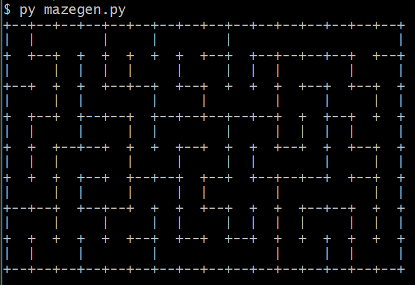

For our final project, we’ll be making an openGL video game. The game will be a first person, 3D maze, in which the player will try to navigate to the maze’s exit.
Team Members:
- Sonthaya Visuthikraisee, 26123016
- Julie Han, 26022682
- Varsha Ramakrishnan, 3031797029
Current Progress
So far, we have accomplished:
- Familiarizing ourselves with OpenGL basics.
- Generating a window.
- Populating the environment with objects.
- Writing vertex and fragment shaders.
- Mapping textures onto objects.
- Using matrix transformations to alter and move objects.
- Simulating first-person camera movement which allows the player to look at and move around in the world.
- Constraining the player to remain inside the bounds of the maze and at the right height.
- Generating a random maze using DFS.
- Starting with a grid of individually walled-off cells, the algorithm randomly traverses through the cells, removing walls as it goes. It stops the traversal when a cell has no unvisited neighbors (i.e. a dead end has been reached).
- Upon reaching a dead end, the algorithm backtracks until there is a cell with an unvisited neighbor and continues traversing from there.
- The process is repeated until all cells have been visited.
- Gathering resources for our next steps. (Resources linked below).
Preliminary Results
We used the following resources:
|
First-person camera movement.
|
Texture we plan to use for the maze walls.
|
|

A random maze generated by the DFS algorithm.
|
Work Plan
Our remaining challenges:
- Implementing our randomly generated maze into OpenGL.
- We will create a grid of 16 x 8 cubes in the environment, as per our maze dimensions.
- Where there are walls, we will map a wall texture onto the cube.
- Where there are no walls, we will leave the cube transparent/invisible.
- For glass walls, we will use THREE cubemap refraction mapping.
- Similarly for reflective walls, we will use THREE cubemap reflection mapping.
- Implementing collision detection to ensure the player doesn't walk through walls.
- Since the maze will be constructed from cubes, we will use bounding boxes and check if the camera position intersects with the boundaries of any of the textured cubes.
- If the player attempts to move into a wall, we will stop the camera by refusing to change the camera's position.
- As invisible cubes are meant to be corridors, we will ignore camera intersections with these and allow players to pass through freely.
- Implementing the laser pointer.
- We have found the following resources to help us in implementing the laser pointer and its physical effects (i.e. passing through glass and bouncing off mirrors).
- On a high level, we plan on drawing a strip of triangles that traces through the end points of the laser pointer. These triangles will be textured with a glow effect.
- To simulate the light bouncing off reflective surfaces, we will fold/reflect the polygon over itself.
- The light will ignore and simply pass through glass surfaces.
- Implementing user interaction with objects
- The user will be able to pick up and drop objects by pressing/releasing the mouse.
- We will be using this resource to help us with object selection:
We are currently about a week behind our originally planned schedule. We have updated the schedule as follows:
- 4/23 - 4/24:
- Set up the structure of the maze.
- Start implementing camera-wall collision detection.
- 4/25 - 4/26:
- Finish handling camera-wall collisions.
- Implement basic laser pointer (no reflections).
- 4/27 - 4/28:
- Implement laser pointer reflections.
- Start implementing player-object interactions.
- 4/29 - 4/30:
- Refine player-object interactions.
- Prepare for poster presentation.
- 5/1 - 5/4:
- Tying up any loose ends.
- Final video.
- Writeup.
Presentation Slides
Link to Google Slides here
Video
Link to Milestone Video here
All Resources